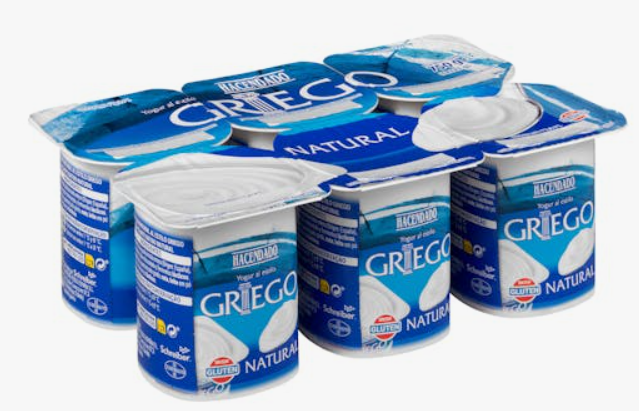

Tu compra del supermercado, decidida desde casa
Elegido por sus ingredientes.
Pensado para tu salud.
Sube tu lista de la compra y Noura te dice exactamente qué producto coger en cada categoría: un recomendado, el motivo y una alternativa. Gratis y sin límites.
Funciona con Mercadona · Más supermercados, en camino
Recomendaciones concretas

Yogur griego natural Hacendado
Ingredientes: leche fresca pasteurizada entera, nata, leche en polvo desnatada, fermentos lácticos
Por qué: ingredientes reconocibles, sin edulcorantes ni aromas artificiales.
Yogur con frutas Hacendado
Descartado: jarabe de fructosa y glucosa, zumos concentrados y aromas artificiales.
Cómo funciona
Escribes «yogur». Te decimos qué yogur.
Te decimos el producto concreto de tu supermercado, con marca y formato, para que llegues y lo cojas directamente de la estantería.
Elige tu supermercado
Hoy, Mercadona. Pronto, más cadenas. Noura trabaja siempre con los productos reales que hay en tu supermercado.
Sube tu lista
Escribe o pega los productos que necesitas, tal y como los apuntarías en un papel: «yogur, tomate frito, mantequilla». O hazle una foto a tu lista de la compra: Noura reconoce los productos directamente desde la imagen.
Llévate el producto exacto
Para cada cosa de tu lista, un producto concreto con su marca y formato, el motivo basado en sus ingredientes y, como mucho, una alternativa.
¿Por qué Noura?
Desde tu casa, no desde el pasillo del supermercado.
Reaccionan producto a producto
Escaneas un envase en la tienda y recibes una nota al momento, con el carro parado en mitad del pasillo. Para saber cuál es la mejor opción de la categoría, tienes que escanear producto a producto y comparar tú mismo cada nota.
Decide toda la compra antes de salir
Subes tu lista completa desde casa y llegas al supermercado sabiendo exactamente qué coger en cada categoría. Si compras online, sabes directamente qué producto buscar en la web del supermercado. La compra deja de ser una sucesión de microdecisiones.
Y todo esto es gratis
Tu lista, resuelta producto a producto. Sin límite de usos, sin anuncios, sin marcas que pagan por aparecer.
Preguntas frecuentes
Lo que suelen preguntarnos
¿Noura es gratis de verdad?
Sí. La función principal, que es elegir supermercado, subir tu lista y recibir un producto recomendado por cada cosa que necesitas, con su motivo y una alternativa, es gratuita para todo el mundo y sin límite de usos. Las funciones avanzadas, como pedirle a Noura que te genere el menú de la semana con su lista de la compra y su coste estimado, forman parte de una única suscripción mensual.
¿Con qué supermercados funciona?
Hoy, con Mercadona. Estamos trabajando para incorporar más cadenas próximamente.
¿Cómo decidís qué producto recomendar?
Aplicamos siempre el mismo conjunto de reglas basado en los ingredientes y el nivel de procesado de cada producto. Las promesas del envase, como «fit», «light», «0%» o «bio», no puntúan. Y cuando ningún producto de una categoría cumple los criterios, no recomendamos ninguno y lo decimos.
¿Las marcas pueden pagar por aparecer?
No. Ninguna marca puede pagar para aparecer recomendada en Noura. Las recomendaciones salen exclusivamente de los criterios de ingredientes.
¿Es Noura consejo nutricional?
No. Noura ofrece información sobre los ingredientes y el procesado de los productos para ayudarte a comparar opciones. No sustituye el consejo de un profesional sanitario o de la nutrición.
Tu próxima compra, ya decidida.
Sube tu lista ahora y llega al supermercado sabiendo exactamente qué coger.